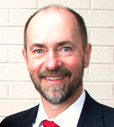

Our Mission Statement:
To provide cost-effective R&D solutions for science, engineering, and technology
L-Egant Solutions (LES) sells high-voltage components, systems, and diagnostics; products that are focused on research and development activities involving the delivery of high-electrical power, commonly referred to as “pulsed-power.” Our high voltage components and systems offerings are imported from Zeonics Systech, of India, which was founded in 1981, and manufactures products that are custom built to customer specifications. Zeonics is a leader in high-voltage, pulsed-power components and systems and many of their products perform similarly to what is available in the USA, at substantially reduced cost over comparable items available domestically.
Laboratory R&D is a highly-competitive, cost-constrained endeavor, which is typical for all disciplines of science, engineering and technology. The pulsed-power speciality relies on the use of sophisticated, high-voltage equipment, for charging, storing, switching, and delivering electrical energy efficiently, and often at the fastest timescales possible to produce extremes in the assembled energy density. Frequently, the materials involved are in a state of high-electrical ionization, that is characteristic of the field of physics that studies plasma.
As the founding principal of LES and an active research physicist/scientist, I am happy to extol my many years experience in these areas. I founded this company to help address the many difficult years of finding cost-effective laboratory equipment for my own research, where it often seemed that my needs were typically more expensive than my available resource funding. Thus, I usually resorted to building my equipment from scratch, or modifying surplus components, rather than buying it outright. As gratifying as this learning process is, it does impact goal-focused workflow and project productivity.
My research career started with a Ph.D. in physics, from the University of California, Irvine, studying the direct injection of intense ion beams into a fusion reactor. After that I worked on ion-space propulsion at the Hughes Research Laboratories, where I was fortunate enough to be able to extend the system performance 5X and reduce the parts count 100X, and document it in a patent. HRL was close to UCLA so naturally I spent much many of my evenings regularly attending their seminar series on entrepreneurship; at this time startups did not have the same cache as they do today. Eventually, my HRL colleagues and I embarked on writing our own business plan and succeeded at getting it funded as MicroBeam, Inc.; developing focused-ion beams for microelectronics at $1 M/unit. Shortly after we opened our doors, I left the company, as our funding was contingent upon “much" more optimistic sales forecasts than what reality could support.
I returned to UC Irvine, doing R & D on magnetic-field compression in a Z-pinch, x-ray lithography, and the propagation of intense ion beams. Z-pinches have historically been an attractive option for fusion, since they provide an easy way to produce extremes in the compressed-plasma-energy density. Eventually, I was successful at funding the "Staged Z-pinch" (SZP) Project, in a highly competitive Department of Energy procurement for alternate fusion concepts. Eventually, this research lead to a new method for energy delivery in a fusion target, with many papers and two patents, and the basis for my third start-up, 15 years later, as Magneto-Inertial Fusion Technologies, Inc. (MIFTI); which continues today to develop the SZP for fusion and the production of medical isotopes.
My earlier PhD work with Norman Rostoker, on intense-ion beam propagation evolved into another new concept for fusion, based on a Field-Reversed Magnetic Configuration (FRC). Basically, the magnetic configuration was linear, high-magnetic beta, and with the use of intense beams at MeV energies, allowed for the use of advanced fusion fuel cycles. One day, while we were chatting about the lack of comomunity vision and funding for this idea, it occurred to me that we should write a business plan to raise money. We eventually did that, with others, forming what was called Tri Alpha Energy, Inc, my second startup. Finding an appropriate name for the company as I did, with the strong opinions of such an eclectic group of co-founders, was a particular challenge!
Laboratory based R&D is inherently a highly-competitive, cost-constrained endeavor; and this is typical for all disciplines of science, engineering and technology. So today, I am trying something a little different, that is less focused on developing new fusion ideas, and more on providing cost-effective products, solutions, and diagnostics; some of which are compiled here on the L-Egant Solutions website.
I'm pleased to announce that LES is also offering our first, home-grown diagnostic product, the - Second-Harmonic Dispersion Interferometer (SHDI), which is available in two configurations: as a 1-dimensional probe instrument and a 2-dimensional probe instrument. Having personally used this diagnostic in my research, I am convinced and can attest to the fact that the performance is nothing short of exceptional and I expect that it will soon be in high demand for many applications, from plasma, gas, and liquids, and in particular for microscopy, where SHDI concepts are currently used and in particular, highly complex. For those of you interested in developing/offering your own diagnostic products, please don't hesitate to reach out to me.
As always, it will be my great pleasure to provide you with the highest level of support for your research needs, and to facilitate your discoveries efficiently, at low cost. Wishing you success in all your research endeavours,
Frank J Wessel